The particular technique used for the evaluation of the overlap integral depends on the atoms involved and whether analytic derivatives are used. All five semiempirical methods use Slater-type orbitals, STOs, although when analytic derivatives are involved [16], a Gaussian expansion [16] of STOs is normally used.
Overlap integrals used in molecular systems are the product of the radial component, described on this page, and an angular component.
Specific expressions for various of the overlap integrals have appeared in the literature. These are normally used for those overlaps which involve only small principal quantum numbers, PQN, n, and a low angular quantum number, l. For the general case, however, in which any PQN may be encountered, the general overlap integral is used. As the final expression is rather ungainly, a simple derivation of the overlap integral will be given.
Slater atomic orbitals are of form
where the  are the normalized complex spherical harmonics.
Complex spherical harmonics are chosen for convenience; 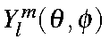real orbitals
have a similar behavior, but require more manipulation. The 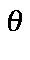dependence of spherical harmonics are the Laguerre polynomials, of form
are the normalized complex spherical harmonics.
Complex spherical harmonics are chosen for convenience; 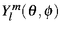real orbitals
have a similar behavior, but require more manipulation. The 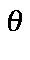dependence of spherical harmonics are the Laguerre polynomials, of form
For convenience the phase factor is set to +1; this varies according to which source is used and the purpose for which the Laguerre polynomials are used.
Solving the differential gives
which, on rearranging to have the summation start at zero, becomes
Substituting this into the STO yields
| 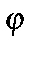 | = | 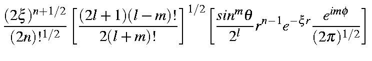 |
| 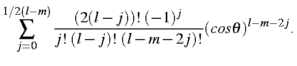 |
At this point it is convenient to collect some of the constants together; thus,
which allows us to represent the STO in a considerably simplified form:
The overlap integral of two STOs can then be represented as
| = | 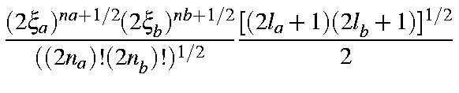 | |
| 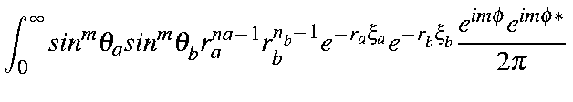 | ||
| 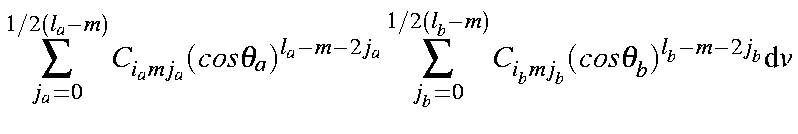 | ||
It is impractical to solve this integral using polar coordinates. Instead, a prolate spheroidal coordinate system is used. Using the identities:
this gives 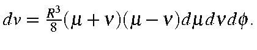
Substituting these identities into the previous expression we get:
| = | ||
| 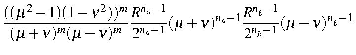 | ||
| 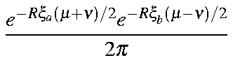 | ||
| 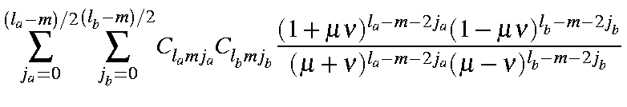 | ||
| 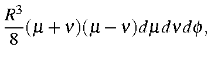 | ||
which, on integrating over and rearranging, gives:
| = | 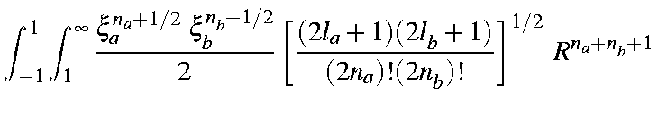 | |
| 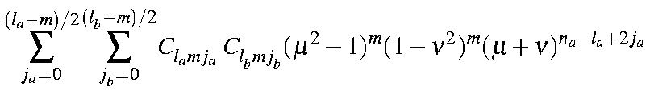 | ||
| 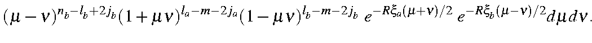 | ||
This is a product of six simple expressions of type (a+b)n. Expanding each term as a binomial generates six summations:
| 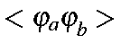 | = | 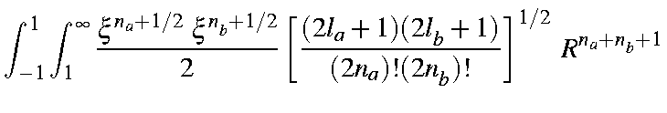 |
| 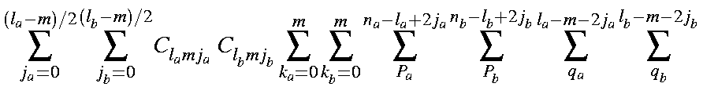 | ||

| ||
| 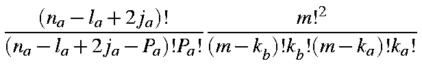 |
Using integration by parts, and making use of the following integrals (The "A" and "B" overlap integrals):
the overlap integral becomes

| = | 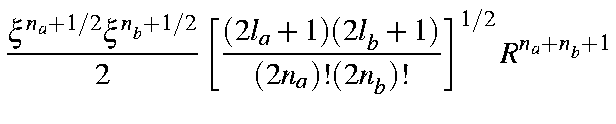 |
| 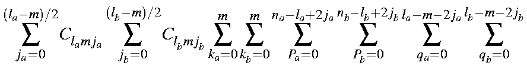 | ||
| 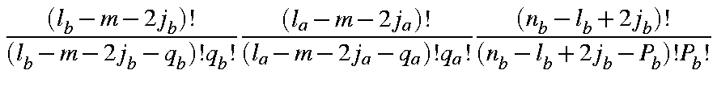 | ||
| 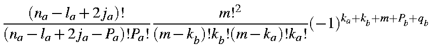 | ||
| 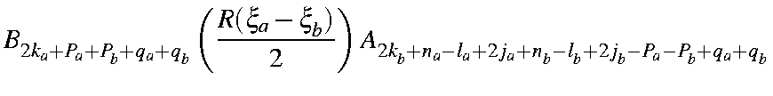 | ||
| 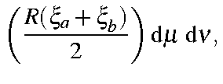 | ||
in which the coefficients Clmj have the numerical values given in the Table.
Note : In subroutine SS the array AFF(l,m,2j) corresponds to Clmj here. This is the most convenient form for algorithmic use. In this form, the overlap integral can be found in function SS.